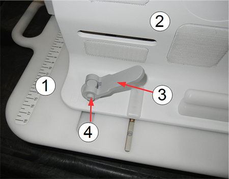
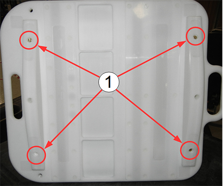
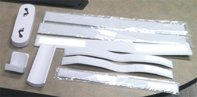
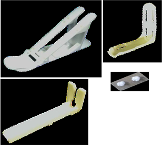
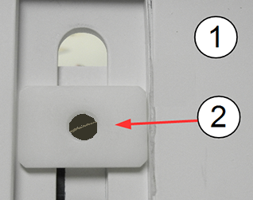

- 00000018WIA3005DE20GYZ
- id_131059384.4
- Jun 11, 2024 3:20:00 AM
Lower extremity positioner FRUs and replacements
Personnel Requirements
| Required Persons | Procedure Timing |
| 1 | 15 minutes |
Overview
This document contains the list of FRUs and replacement parts for the 16-channel Flex Coil Foot/Ankle/Knee Positioner (PN 5437192, M7005BE). It also includes the latch replacement procedure.
The positioner can be used on GEM (flat) tables or curved tables. To use on a GEM table, remove the two curved pieces attached to the base plate of the positioner. See Positioner Base Plate.

| Item | Description |
| 1 | Positioner base plate |
| 2 | Positioner side wall |
| 3 | Latch (open position) |
| 4 | Screw holding lever to base (do not remove) |

| Item | Description |
| 1 | Positioner base plate. (Remove two screws on each side to modify the positioner for use on a GEM table.) |
FRUs and Other Accessories
| Description | GE Part Number |
|
Small Mechanical Part FRU Kit
|
5504484 |
The following consumable parts are not intended to be covered by any GE HealthCare contract. If replaced, they should be billed to the customer.
| Description | GE Part Number | Image | |
| Pad and Straps FRU Kit | 5504483 |
 | |
| Pad and Straps FRU Kit Contents | GE Part Number | ||
|
Foot Strap | 5456263 | ||
|
Ankle strap | 5453776 | ||
|
Foot support heel pad | 5457814 | ||
|
Foot support sole pad | 5457033 | ||
|
Heel pad | 5455481 | ||
|
Velcro hook pad 1 | 5503314 | ||
|
White Velcro hook tape #10 | 5503314-10 | ||
|
White Velcro hook pad 2 | 5503314-2 | ||
|
White Velcro hook pad 3 | 5503314-3 | ||
|
White Velcro hook tape #4 | 5503314-4 | ||
|
White Velcro hook tape #5 | 5503314-5 | ||
|
White Velcro hook tape #6 | 5503314-6 | ||
|
White Velcro hook tape #7 | 5503314-7 | ||
|
White Velcro hook tape #8 | 5503314-8 | ||
|
White Velcro hook tape #9 | 5503314-9 | ||
|
White Velcro loop tape 1 | 5503315 | ||
|
White Velcro loop tape #2 | 5503315-2 | ||
|
Anti-skid pad 2 | 5462302-2 | ||
|
Foot-ankle positioner anti-skid pad | 5462302 | ||
|
Anti-skid pad 3 | 5462302-3 | ||
Foot and Coil Holder FRU Kit
| 5504485 |
 | |
Consumable
Loctite 242 Threadlocker (GE P/N 46-170686P1)
Latch Replacement
The latch replacement assembly is part of the small mechanical part FRU kit.
-
The base plate of the positioner has two covers that protect the slot and base of each latch. Using a flat-blade screwdriver, remove the plastic screws that attach the slot cover to the base plate of the positioner.
-
Remove the old latch by removing the brass screw on the bottom of the latch. The brass screw was seated with Loctite, so you must turn the screwdriver firmly to break the adhesive.
Figure 3. Remove Brass Screw to Remove Latch 
Item Description 1 Positioner base plate 2 Stabilizer foot of latch attached with brass screw -
Install the new latch with the latch in the unlocked position. Latch the stabilizer foot to lay in the channel as shown in Remove Brass Screw to Remove Latch.
-
Open the latch lever to the unlocked position (oriented 180 degrees to the lock position).
-
The latch assembly sits on top of the curved washer, with the bottom of the latch assembly in the curved portion of the washer. Hold the latch assembly on top of the base plate.
-
Position the latch stabilizer foot in the channel on the bottom of the positioner plate and line it up with the latch assembly.
-
Apply Loctite 242 to the brass screw and install it through latch stabilizer foot on the base plate.
-
Torque the brass screw to 5 inch-pounds (or snug, plus ¼ turn).
-
-
Reinstall the base plate cover.